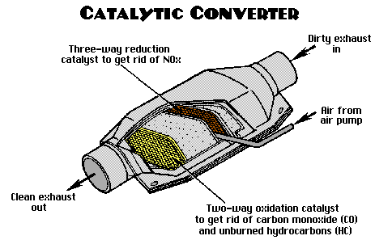

Emission Controls
Emission control systems reduce harmful pollutants produced by the engine. They include devices like the catalytic converter, EGR valve, oxygen sensors, and evaporative control system.
Emission Control Function
- Catalytic Converter: Converts harmful gases into less harmful emissions.
- Oxygen Sensors: Monitor exhaust gases to optimize fuel-air mixture.
- EGR Valve: Recirculates exhaust gases to reduce nitrogen oxides (NOx).
- Evaporative Control: Prevents fuel vapors from escaping into the atmosphere.
Key Components
- Catalytic Converter: Cleans exhaust gases before release.
- Oxygen Sensors: Help maintain efficient engine operation and emission control.
- EGR Valve: Reduces combustion temperatures and NOx emissions.
- Charcoal Canister: Stores fuel vapors for later combustion.